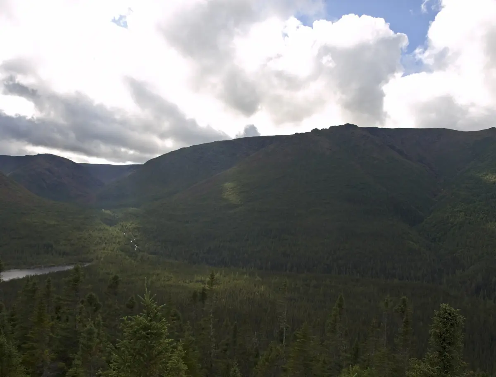

Le mont Albert, le plateau dénudé de la Gaspésie
Mis à jour le 21 novembre 2026
Une montée soutenue depuis le Gîte du Mont-Albert jusqu’à un vaste plateau sans arbres, fait de serpentine, où vit le caribou de la Gaspésie au-dessus de la forêt. L’une des grandes randonnées du Québec.

- Distance
- 11,6 km aller-retour par le versant nord, ou boucle de 17,3 km
- Dénivelé
- Environ 860 m
- Durée
- Environ 5 h aller-retour, 6 à 8 h pour la boucle
- Difficulté
- Difficile
- Départ
- Gîte du Mont-Albert, sur la route 299
- Saison
- Le versant nord n’ouvre qu’une partie de l’été, pour protéger le caribou
Carte

Profil d’altitude

Le parcours
Depuis le Gîte du Mont-Albert, le sentier traverse la rivière Sainte-Anne et monte en forêt sur le versant nord. La pente est soutenue du début à la fin : il y a peu de replats avant la limite des arbres.
Puis la forêt cède la place au plateau, environ 13 kilomètres carrés de serpentine ocre et dénudée, avec l’abri du sommet et une vue immense sur les Chic-Chocs. Par temps clair, on se croirait dans le Grand Nord, à quelques heures de la mer.
Redescends par le même chemin, ou continue sur la boucle : elle traverse le plateau, descend par le versant sud et revient le long de la rivière, pour environ 17,3 km en tout.
Bon à savoir
- Le caribou d’abord. Le plateau abrite la dernière harde de caribous au sud du Saint-Laurent. Reste sur le sentier, garde tes distances et respecte les fermetures.
- La météo change vite. Même en juillet, le plateau peut être froid, venteux et dans la brume. Apporte des couches, un coupe-vent et de l’eau.
- Pars tôt. Garde du temps pour profiter du sommet et redescendre avant la fin de la journée.
- Accès au parc. Un droit d’accès s’applique dans les parcs nationaux du Québec. Vérifie les dates d’ouverture et l’état des sentiers sur sepaq.com.
Photos




Garde la journée avec Arpente
Touche Enregistrer au départ et glisse ton iPhone dans ta poche. Arpente trace ton parcours et mesure la distance, la durée et le dénivelé, même écran éteint. Ajoute une photo et une note : la sortie reste dans ton journal. Découvre Arpente.
D’autres sorties
 Acropole-des-DraveursEnviron 10,4 km aller-retour jusqu’au premier sommet, 11,2 km jusqu’au troisième
Acropole-des-DraveursEnviron 10,4 km aller-retour jusqu’au premier sommet, 11,2 km jusqu’au troisième Sentier de la StatueEnviron 7,6 km aller-retour, ou 3,6 km aller-retour jusqu’à la halte Bellevue
Sentier de la StatueEnviron 7,6 km aller-retour, ou 3,6 km aller-retour jusqu’à la halte Bellevue Canal de Lachine14,5 km aller simple, du Vieux-Port à Lachine
Canal de Lachine14,5 km aller simple, du Vieux-Port à Lachine Mont RoyalEnviron 1,4 km du haut de la rue Peel au belvédère, environ 2 km jusqu’à la croix
Mont RoyalEnviron 1,4 km du haut de la rue Peel au belvédère, environ 2 km jusqu’à la croix
Toutes les randonnées au Québec
Le tracé de la carte est indicatif, calculé avec BRouter sur les données d’OpenStreetMap (© contributeurs OpenStreetMap, ODbL) ; altitudes SRTM. Il ne remplace pas la carte officielle du parc. Les distances, dénivelés et durées du tableau viennent des sources des parcs : vérifie les conditions avant de partir.